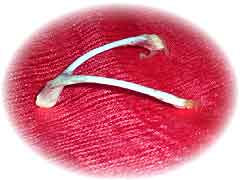
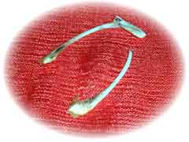

| ..*..*.. 2003年3月29日(土) 晴れ ..*..*.. 先週は、ホアナが遊びに来ていました。彼女はカンボジアに住んでいるのですが、飛行機を乗り継いでペルーの実家に帰る途中、サンノゼに寄ってくれました。カンボジア→タイ→成田→ロサンジェルス→サンノゼののち、4日間うちにいて、昨日、また帰途につきました。今度は、ロサンジェルス→シカゴ→コネティカット→アトランタ→ペルーと乗り継ぐそうです。 彼女がいる間にチキンを焼いたのですが、「ウィッシュ ボーン」というのを教えてくれました。 こんな風にチキン（とかターキー）の二股に分かれている骨を探します。これはちょっと小さめ。 そして、２人が願い事をして、両側からひっぱります。大きくとれた方のの願い事がかなうそう。この場合は、上側の人の願い事がかないます。 結構、固くて、ちょっと力がいります。 |